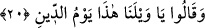

Onları susturmak için “De ki: Evet, hem de hor ve hakir olarak” hepiniz
“(diriltileceksiniz).” “Evet” anlamına gelen “
” kelimesi müspet ve istifham harfinden
sonraki soruya cevap olarak gelir. Hitap hem kendilerine hem de babalarına yöneliktir.
“
” kelimesi, zillet, küçüklük ve aşağılık demektir.
19. O (diriltme) korkunç bir sesten ibaret olacak, o anda hemen onların gözleri
açılıp etrafa bakacaklar.
“O (diriltme)” başkasına hacet duyulmayan “korkunç” tek “bir sesten ibaret olacak,
o anda hemen onların” müşriklerin “gözleri açılıp” hayretler içinde “etrafa
bakacaklar.” Yahut olduğu gibi görecekler. Yahut kendilerine yapılacak muameleyi
bekleyecekler. Yani Allah Teâlâ dirilişi emrettiği zaman siz o dirilişi zor görmeyiniz, o
ancak korkunç bir sestir.
Çoban koyununa yahut devesine seslenince Araplar “
” derler. Bu
korkunç ses sûra ikinci üfürüştür. Müşrikler ve bütün yaratıklar dirilip mezarlarından
kalkacaklar. Hayret ve şaşkınlık içinde oldukları yerde bakıp dururlar ve kendilerine
yapılacak muameleyi beklerler.
20. (Durumu gören kâfirler:) Eyvah bize! Bu ceza günüdür, derler.
Diriltilip “(Durumu gören kâfirler:) Eyvah bize! Bu ceza günüdür, derler.” Bu ifade
istînaf yoluyla kendi helâk ve hüsranlarını çağırmalarının bir illet ve gerekçesidir. Yani
bugün yaptıklarımızın karşılığını göreceğimiz gündür. Kâfirler dünyada diriltilip
sorguya çekileceklerini ve yaptıklarının karşılıklarını göreceklerini dünyada
duyuyorlardı. Dirilişle birlikte bu günün ceza günü olduğunu bilmiş oldular. Dirilişi
müşâhede etmekle de aynı şekilde diriliş sonrasındaki sorgulama ve cezalandırmaya da
kesin kanaat getirdiler. Bu durumda melekler sitem ve azar yoluyla onlara: “İşte bu,
yalanlamış olduğunuz hüküm günüdür” diyeceklerdir.
21. İşte bu, yalanlamış olduğunuz hüküm günüdür.